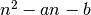

Quadratic primes¶
Problem 27
Euler published the remarkable quadratic formula:
It turns out that the formula will produce 40 primes for the consecutive values
n = 0 to 39. However, when n = 40, is
divisible by 41, and certainly when n = 41,  is clearly divisible
by 41.
is clearly divisible
by 41.
Using computers, the incredible formula was discovered, which produces 80 primes for the consecutive values n = 0 to 79. The product of the coefficients, -79 and 1601, is -126479.
Considering quadratics of the form:
, where and
where is the modulus/absolute value of n e.g. and
Find the product of the coefficients, a and b, for the quadratic expression that produces the maximum number of primes for consecutive values of n, starting with n = 0.
Solution
We’ll reuse the primality test, euler03.isprime()
from euler03 import isprime
We’ll define a function to iterate through all primes generated by .
def primeFunc( a, b ):
"""Generate primes using :math:`n^2 + an + b`
For all values of n between 0 and max(abs(a),abs(b)).
>>> from euler27 import primeFunc
>>> e1= list(primeFunc(1,41)) # n^2+n+41
>>> len(e1)
40
>>> e2= list(primeFunc(-79,1601)) # n^2-79n+1601
>>> len(e2)
80
"""
for n in range(max(abs(a),abs(b))):
x= n*n+a*n+b
if x > 0 and isprime(x):
yield x
else:
break
Test the components in this module.
def test():
import doctest
doctest.testmod(verbose=0)
Compute the answer. a is a value in the range . b is a value in the set of primes ≤ 1000. All four quadratics are tried: , , , 
def answer():
bList = [ b for b in range(2,1000) if isprime(b) ]
#print bList
maxPList= []
maxPArgs= None
for a in range(0,1000):
for b in bList:
for sa, sb in ( (a,b), (-a,b), (a,-b), (-a,-b) ):
pList= list(primeFunc(sa,sb))
if len(pList) > len(maxPList):
maxPList= pList
maxPArgs= (sa, sb)
return maxPArgs
Compute the answer.
def confirm(ans):
assert ans == ( -61, 971 ), "{0!r} Incorrect".format(ans)
#print list(primeFunc(*answer))
Create some output.
if __name__ == "__main__":
test()
ans= answer()
confirm(ans)
print( "The coefficients, a and b, for the quadratic expression that"
"produces the maximum number of primes for consecutive values of n:", ans )
a, b = ans
print( "The product:", a*b )